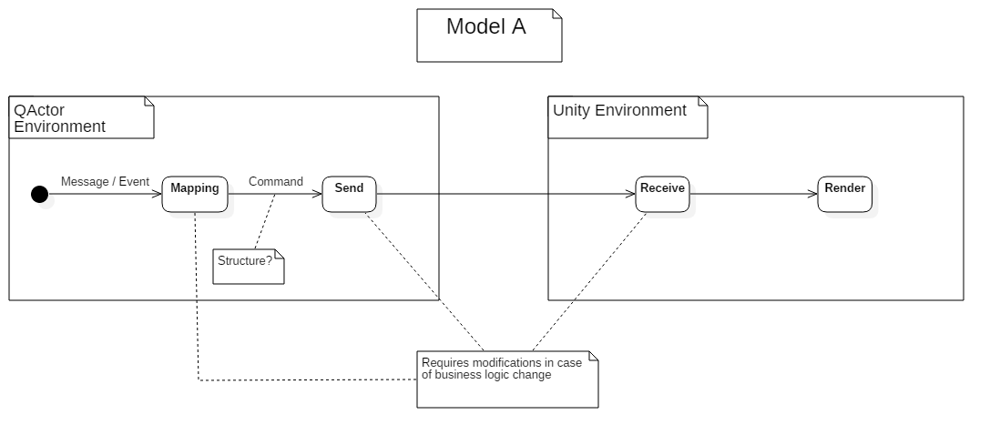
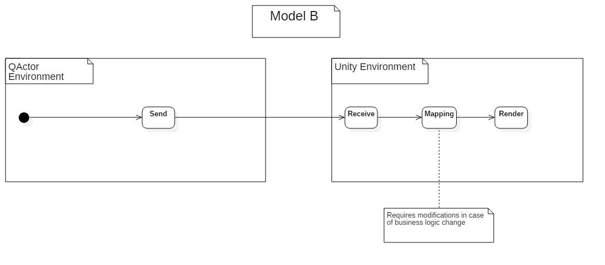
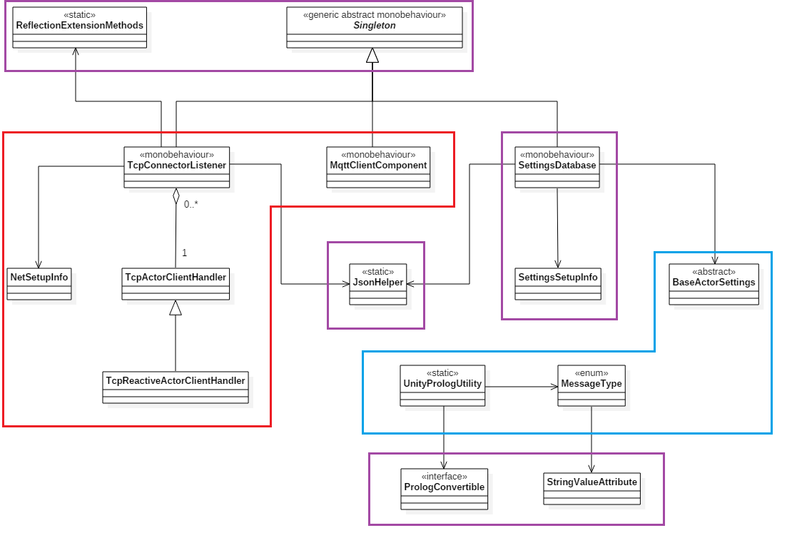
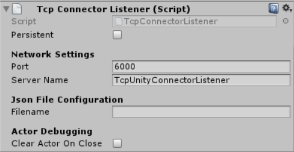
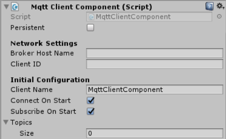
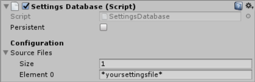
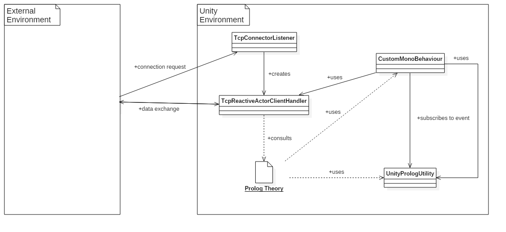
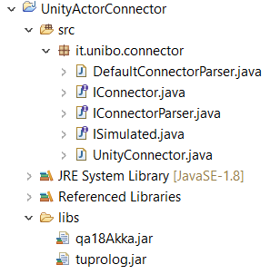

Implementation Choices
In this section we introduce and explain the major implementation choices that have been taken, with the aim to view and analyze step by step the project evolution in its entirety by taking always into account what has been said in the Analysis section.Define the model
First of all, we have to determine each individual macro action that affects the data stream in both directions. In other terms, the problem in question regards how data can be manipulated in order to establish a connection between the QActor facade and its virtual representation. More precisely, we can define two possible models. Please note that the following schemes are not the only possible options that can be considered, but they are just the result of my own personal reasoning.


Starting from the observation of model A, we can state the following aspects.
- The mapping load is all bestowed upon the QActor environment. Thus, once the simulation theory is defined, the net support just sends the mapping result data to the Unity framework. However, even if the syntax used for describing the pieces of information is prolog-like (generally speaking a string), there is still the necessity to parse the received data at Unity side.
- Generally speaking the only stage of the data flow manipulation process is the mapping phase. This is the case in which we define a unique data format in order to do not affect the net support. More precisely, it is revelant to stress the fact that if we don't choose a fixed way to exchange data between the two environments we have to take into account any sort of modifications to the net communication layer.
- The mapping load is all attributed to the Unity environment. As a result, once a proper mapping behaviour is defined, the engine can work autonomously. Any business logic change directly affects the mapping stage only.
- Since there is not any sort of data manipulation at QActor level, we can state that the data format is the same used by actors, that is prolog terms. However, even though the QActor framework remains almost untouched, there is still the necessity to maintain a sort of alignment between actors' theories and the data mapping at Unity side.
Unity Prolog
The reason why I've decided to use a prolog interpreter at Unity side is because of the significant reduction of development time that it could cause. By doing so, the only remaining steps about data manipulation were the definition of prolog terms at QActor side, which would have matched with the Unity Prolog theories, and the Unity's specific scripts, responsible of the linking between the prolog layer and the final simulation rendering. However, the main negative aspect is that, since this is a open-source project, its continous and active support may not be guaranteed. Moreover, by choosing Unity Prolog, inevitably any developer that wants to use this project has to firstly take a look at its documentation.UniRx
Another choice concerning data streams that I took is UniRx. Since the communication between the Unity and QActor's environments is based upon continous flows of data, why don't we use a Observer/Observable pattern? Probably, for those that are not in ReactiveX , this may sound a bit masochistic, but after a relatively short amount of time you will definitely change your mind since it is very useful and it can ease your development process. Anyway, the main reason why I've decided to use this library is basically because of a pure educational purpose.Project Structure
The Unity Actor Simulator project is graphically summed up via the following UML diagram.

As we can see, it is possible to distinguish the following packages.
Net Package
The net package is responsible of the communication between the two environments, implemented via the TCP protocol. Therefore, we can identify three main functionalities that define the main task that gives the name to this package.-
TCP Server: represented by the TcpConnectorListener class. Since we want to interact with the external environment, that is
QActors' one, it is necessary to setup a proper TCP server able to handle multiple client requests at the same time. More precisely, the C# class uses a TcpListener that is sensitive to incoming external requests. For each new connection established, the TcpConnectorListener creates a TcpActorClientHandler instance, responsible of handling the communication with the client in both directions.
Lastly, the TcpConnectorListener derives from MonoBehaviour, which is a Unity's specific class. Thus, in order to properly use this class, you only need to add the script as a component to a GameObject in the scene.

Note: the Clear Actor on Close option, when enabled, allows to automatically remove the simulated actor's gameobject on connection interruption. This can be useful during test runs since it allows to establish multiple connections without worrying about the Unity side. -
Client Handler: represented by the TcpActorClientHandler abstract class which defines the general behaviour of a client's handler. In particular, the net package defines its own default implementation of the client's handler, that is TcpReactiveActorClientHandler, which receives and sends data in a prolog-like syntax and exploits UniRx's functionalities.
More precisely, it exploits the Unity Prolog library by trying to unify the received prolog goal within the loaded theories. Thus, if there isn't any loaded theory, nothing will be executed associated to that received command and the Unity Prolog interpreter will fail. -
Configuration: in order to do not define a fixed behaviour, the TcpConnectorListener gives the user the possibility
to modify its initialization process by reading a Json file. More precisely, it uses the utility class JsonHelper in order to read the custom configuration from a .json file and store it in a NetSetupInfo instance. The customizable properties are the following ones.
- IP Address
- Port
- Client's Handler
Note: The TcpConnectorListener script automatically searches for its configuration file under the folder Assets/Configuration. Therefore, if you don't have one, remember to create it!
-
MQTT: The communication between the Unity environment and the external one can be done via the MQTT connectivity protocol. More precisely, the Unity Actor Simulator project introduces the MqttClientComponent which basically wraps up a MqttClient by exploiting the UniRx plugin. In particular, common events emitted by the MqttClient class (i.e. published, subscribed) can be viewed as IObservables.
In order to properly use the MqttClientComponent class, since it derives from MonoBehaviour, the only step required is to add it as a Component to one of your GameObjects.

As you can see, the MqttClientComponent script exposes some public parameters.
- Broker Host Name: the MQTT server's IP address to which the client connects. More precisely, it is not necessary to specify the protocol used in the IP address, since this will cause an exception during the connection phase. For example, suppose you have "tcp://m2m.eclipse.org:1883" as the IP address. The correct Broker Host Name value will be "m2m.eclipse.org". The port number is standardized, in this way it is not necessary to specify it.
- Client ID: the ID used by the MqttClient during the connection phase. This parameter is optional. This means that if nothing is specified, a new ID will be generated. The automatic ID generation is done via the Guid class.
- Connect On Start: if enabled, allows the MqttClient to connect on script's Start method.
- Subscribe On Start: if enabled, allows the MqttClient to subscribe to specified topics on script's Start method.
- Topics: topics to which you want to subscribe to.
Actor Package
The actor package is very simple due to the fact that it defines the general structure of the actor's settings, which are always identified by its name. In other terms, each custom actor's set of properties is uniquely identified by the actor's name. It is important to underline that a class that derives from BaseActorSettings only defines the set of symbols and properties to which the simulated actor is sensitive to. Thus, in order to convert these pieces of information into something understandable by the Unity Engine, it is necessary to define a proper mapper class!Moreover, the package includes the so called UnityPrologUtility class that, as the name says, offers some support functionalities directly invoked by prolog theories. So why then is this class inserted into this package? The UnityPrologUtility allows to create outgoing data in prolog syntax, in accordance with the QActors' communication semantics, that are messages and events. More precisely, it offers methods like
BuildEvent and BuildMessage. In addition, regarding messages, the MessageType enum defines all the possible semantics that are currently supported by the QActors' framework.
Note: In order to properly attach to QActors' communication semantics, the sending of data derived from UnityPrologUtility communication methods (the ones described above) is not enough since the functors used by the class are custom and therefore they require a further interpretation at QActors' side. However, there's no reason to worry about that, since the parsing process can be automatically handled by the DefaultConnectorParser class, used by the UnityConnector class.
All these classes belong to the Unity Actor Connector Java project that will be discussed in more detail in this section.
Configuration Package
The configuration package is composed by Json configuration files and the SettingsDatabase class. More precisely, at system's start, the latter loads the defined files and stores their contents in SettingsSetupInfo instances. The result of this process it to create a link between each actor and their specific configurations. In particular, it is revelant to underline that there exists three concepts.- Actor: identified by its name which must be unique.
- Actor's Settings: define the symbols and properties to which the actor is sensitive.
- Actor's Settings Mapper: associates to each symbol an action that can be rendered by Unity.
-
Mapping settings: this is the file that is stored by the SettingsSetupInfo class and which contains the following fields.
- Name of the Actor's setting Json file.
- Name of Actor's settings wrapper type (the c# class).
- Name of the settings wrapper's assembly.
- Name of the Actor's setting mapper wrapper type (the c# class).
- Name of the mapper wrapper's assembly.
- Actor's setting: this is the file that is stored by a custom class that derives from BaseActorSettings.

Note: The SettingsDatabase class derives from Monobehaviour like TcpConnectorListener. Therefore, in order to use this script, you only need to add it as a component to a GameObject.
Note: The SettingsDatabase script automatically searches for files that are under the folder Assets/Configuration. Therefore, if you don't have one, remember to create it!
Utility Package
The utility package defines some various support functionalities that are described as follows.- Singleton: refers to this original script which I've simplified and adjusted in accordance with the Unity Editor's version on which this project is based. Briefly, it defines the concept of singleton for monobehaviours scripts, allowing them to "survive" even to scene changes.
- JsonHelper: refers to this stackoverflows' post from which I've added some additional functionalities in order to work with files.
- PrologConvertible: very simple interface that just defines the GetPrologRepresentation method. This interface is used by UnityPrologUtility's communication methods since the result is a string in prolog-like syntax.
- StringValueAttribute: since enums can only have numerical values, it is not possible to directly specify a corresponding string value. Thus, regarding MessageType enum, this custom attribute allows to attach in the form of an annotation a string value to a enum value.
- ReflectionExtensionMethods: very simple static class that just defines the GetInheritedTypes method. This extension method is used by the TcpConnectorListener during the configuration step in order to verify if the client handler type's name, read from the Json file, derives from TcpActorClientHandler.
Project Interaction
In order to fully understand how an entity can be simulated via exploiting this project, it is useful to view the latter by the interactions point of view. More precisely, the below graph reports, step by step, the sequence of actions that are needed connect to the Unity simulation enviroment and to communicate with our simulated entity.

From the observation of the above graph, we can distinguish two different action sequences.
-
External -> Unity: this sequence of actions defines how an input, generated within the external environment, can arrive to the entity's simulated counterpart. In particular we can list the following actions.
- Connection request: net connection request to the TcpConnectorListener server.
- Handler creation: by default it is a TcpReactiveActorClientHandler instance.
- Receiving data: the client's handler handles this step.
- Consulting prolog theories: the incoming input data is parsed via prolog theories.
- Notifying the simulated entity: within the prolog theories it is possible to access directly to GameObjects via procedure call. Moreover, by exploiting the UnityPrologUtility static class, it is possible to emit an event to which a component can be sensitive to.
-
Unity -> External: this sequence of actions describes how output data is generated withing the simulation environment and redirected to the external environment. Analogously, we can list the following actions.
- Accessing the client's handler: it is possible to have access to a specific client's handler via the TcpConnectorListener class.
- [Optional] Building external environment compliant data: the UnityPrologUtility class gives an example of how it is possible to create events or messages in accordance to the QActor's specification.
- Sending data: the client's handler handles this step.
In-depth Analysis: C# Events
In this section, we report some pieces of the .NET documentation about C# events in order to clarify this concept since it exploited inside the Unity Actor Simulator project. The references are listed below.- https://msdn.microsoft.com/en-us/library/edzehd2t(v=vs.110).aspx
- https://www.intertech.com/Blog/c-sharp-tutorial-understanding-c-events/
- http://csharpindepth.com/Articles/Chapter2/Events.aspx
Events
Events in the .NET Framework are based on the delegate model. The delegate model follows the observer design pattern, which enables a subscriber to register with, and receive notifications from, a provider. An event sender pushes a notification that an event has happened, and an event receiver receives that notification and defines a response to it.An event is a message sent by an object to signal the occurrence of an action. The action could be caused by user interaction, such as a button click, or it could be raised by some other program logic, such as changing a property’s value. The object that raises the event is called the event sender. The event sender doesn't know which object or method will receive (handle) the events it raises. The event is typically a member of the event sender
Events are simple serial invocation. Thus, there is no any built-in parallelization or async of standard .NET events, it's up to you to implement it.
Delegate
A delegate is a type that holds a reference to a method. A delegate is declared with a signature that shows the return type and parameters for the methods it references, and can hold references only to methods that match its signature. A delegate is thus equivalent to a type-safe function pointer or a callback. A delegate declaration is sufficient to define a delegate class. Delegates have many uses in the .NET Framework. In the context of events, a delegate is an intermediary (or pointer-like mechanism) between the event source and the code that handles the event. You associate a delegate with an event by including the delegate type in the event declaration.Event Handlers
The .NET Framework provides the EventHandler and EventHandler<TEventArgs> delegates to support most event scenarios. Use the EventHandler delegate for all events that do not include event data. Use the EventHandler<TEventArgs> delegate for events that include data about the event. These delegates have no return type value and take two parameters (an object for the source of the event and an object for event data).Delegates are multicast, which means that they can hold references to more than one event-handling method. Delegates provide flexibility and fine-grained control in event handling. A delegate acts as an event dispatcher for the class that raises the event by maintaining a list of registered event handlers for the event.
Event Data
Data that is associated with an event can be provided through an event data class. The .NET Framework provides many event data classes that you can use in your applications.The EventArgs class is the base type for all event data classes. EventArgs is also the class you use when an event does not have any data associated with it. When you create an event that is only meant to notify other classes that something happened and does not need to pass any data, include the EventArgs class as the second parameter in the delegate. You can pass the EventArgs.Empty value when no data is provided. The EventHandler delegate includes the EventArgs class as a parameter. When you want to create a customized event data class, create a class that derives from EventArgs, and then provide any members needed to pass data that is related to the event. Typically, you should use the same naming pattern as the .NET Framework and end your event data class name with EventArgs.
In-depth Analysis: MQTT Connectivity Protocol
MQTT stands for MQ Telemetry Transport. It is a publish/subscribe, extremely simple and lightweight messaging protocol, designed for constrained devices and low-bandwidth, high-latency or unreliable networks. The design principles are to minimise network bandwidth and device resource requirements whilst also attempting to ensure reliability and some degree of assurance of delivery. These principles also turn out to make the protocol ideal of the emerging “machine-to-machine” (M2M) or “Internet of Things” world of connected devices, and for mobile applications where bandwidth and battery power are at a premium.MQTT supports three different levels of Quality of Service (QoS).
For more information about MQTT, please visit its documentation page.
For what concerns this project, the reference implementation is MQTT Paho, whose source code can be viewed here . More precisely, in order to use the MQTT connectivity protocol, it is necessary to import the related dll file into your project's Assets folder.
In-depth Analysis: Unity Actor Connector
This simple project has the role of intermediary between the QActors' environment and the simulation one, represented by Unity. Before viewing this project in more detail, please remember that, due to the fact that each environment is independent from the other one, it is necessary to introduce some sort of driver in order to establish a communication channel between them.The whole project can be summarized by the following images.


As we can see, it is possible to distinguish the following packages.